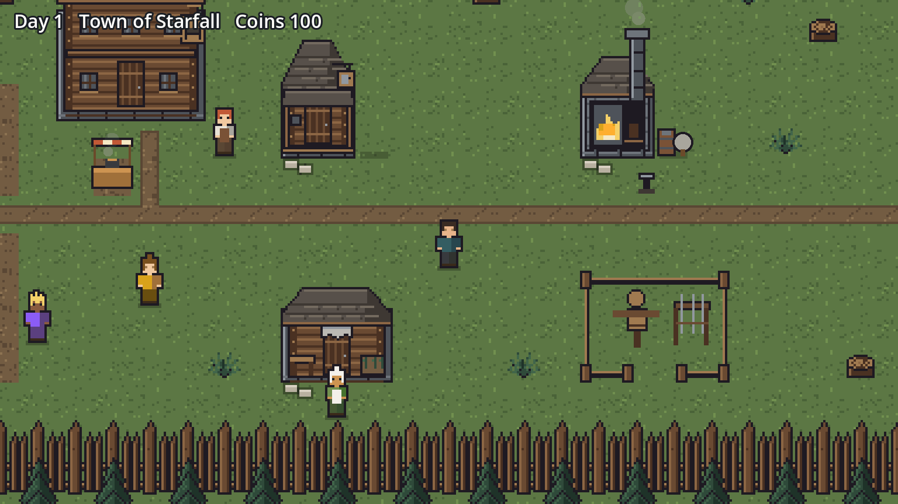

Little Ranch
A toy for ages 2 to 4. Feed a baby Cindercub, give it a bubbly bath and play peekaboo behind the bush, until it yawns and curls up for bed.

What you'll do
Sit with a little one and tap: the bowl, the sponge, the bush and the baby. The visit ends with a lullaby at bedtime.
Your first ten minutes
Taps or the mouse; drag the sponge for bubbles. Grown-ups: hold the lock in the corner for three seconds to leave or turn the sound off.
If you're lost
No reading. Nothing to lose. The visit ends with a lullaby at bedtime.
Realmbound
v1.9.2 · A note for the road
New hero: open Road note for your next step and keyboard or touch hints. Turn your phone either way; the note stays optional. Returning hero: keep your save. Road help in Options can show the notes again if you want them.
A single-player world in the spirit of classic online RPGs. Create a hero, take quests, gear up and grow from level 1 to 60 across eight zones, each with its own light and weather. The world fills the screen, with your journal and satchel in hand. Then lead a guild of adventurers who work, rest and have their own stories, through dungeons (with harder Heroic versions) and a raid.


What you'll do
- Quest, fight with your class's abilities, loot and equip.
- Walk towns, visit the inn and the smithy, and walk the road to the Lantern Rest, an inn on the way to town.
- Recruit a guild, send them on jobs and hear their stories.
- Run dungeons (with Heroic versions) and a raid at 60.
Your first fifteen minutes
- Create a hero: faction, race, class, name and journey length.
- Follow the first quest; the Quests tab shows what's needed.
- Use your abilities yourself at first, then try Auto.
- Loot, compare gear in your bags, and turn the quest in.
If you're lost
- Quests tab first: it names the enemy or item and where.
- Hurt? Rest at the inn and repair your gear.
- Pick fights closer to your level.
- The field guide explains every system.
Diamond Manager
You are the new general manager of the Brackenport Lanterns, the worst club in a six-club league. Watch each game play out on Lamplight Field, then make the calls: the batting order, trades, free agents, contracts and ballpark upgrades. Thirty games make a season; the top two meet in a final.
How to play
- Press Play ball (or Space) to watch the next game. Speed it up or skip to the final score.
- Open the Front office (or F) to change the team.
- Every player has ratings from 0 to 99. Better ratings win more.
What you'll do
- Trade with five rival clubs; they say yes or how far apart you are.
- Sign free agents inside the owner's budget.
- Spend the gate money on seats, lights, training rooms and more.
Tell us
Is it clear what to do? Did a number feel wrong? The Feedback button or Tell us in ⚙ Settings goes straight to us.
More in the works
Otherworld Prototype
Live one life in another world, with a gift that changes the choices you see. Three worlds so far: Asterhold, whose town changes with what you do; Hearthmere, a shuttered lakeside inn and a long winter; and the Ashen Throne. When a life ends, you keep a memory into the next.
Play Otherworld →Starfall Preview

Run a frontier guild town: post jobs on the board, serve stew at the counter, work the forge, and grow from a hamlet into a market town as your adventurers grow. Walk with the arrows, WASD or a click; Enter or E to use the board, the counter and the forge; M for music, N for sound effects. Play the new Starfall (preview) →
And later
A walk-in arcade where your characters meet, a shared catalogue of creatures across games, and more sports careers. Every game is playable on its own, in one light, shared universe.
The ten-minute playtest
Got ten minutes? Pick one game, play until the stopping point, then answer three questions. No need to finish anything or be good at it. Where you got stuck is exactly what we want to hear.
1. Pick one and play until…
- Little Ranch: the bowl, the sponge, the bush and the baby.
- Realmbound: you've made a hero and finished the first quest.
- Diamond Manager: you've played a week of games and made one change in the Front office.
- Storm Front: three runs, or one with a friend taking turns.
2. Answer three questions
- What was the best moment?
- Where were you stuck, confused or bored?
- Would you play again tomorrow? Why, or why not?
3. Send it
Open ⚙ Settings in the game and choose Tell us → Share feedback. The game and version are filled in for you. No GitHub account? Message Evan your three answers; a screenshot helps.
Tell us what you think
One good moment and one rough edge is the most helpful thing you can send. Each game has Tell us in its ⚙ Settings (and many have a Feedback button in the top bar) that fills in the game, version and where you are. Or just message Evan: a screenshot and a sentence is perfect.
Share feedback (GitHub account)Report a bugYour saves stay in your browser and are never sent anywhere. Each game has a "Your save" button to download a backup.